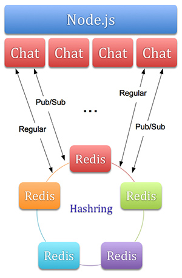

Features

- Operates on both websocket and flashsocket client.
- It starts several chat processes, equal the number of your CPUs.
- All communications between chat instances are provided via Redis pub/sub.
- Operates with several Redis instances via hashring.
- Provide unlimited number of chat rooms.
- Store message history, delete old messages after the time has passed.
- Provide users-per-room counting.
- Read-only user mode for load reduction.
Load Capabilities
Max connection count is limited by 'ulimit' and amount of memory.
Each connection you expect should be provided with 1 MB of RAM.
Max number of clients is also limited by CPU.
Small test on ubuntu VM with 4 CPUs (2.5 GHz Intel Core i5) showed,
that 30.000 is ok.
Requirements
Node.js Modules
- websocket >= 1.0.7
-
redis >= 0.7.1
- hash_ring >= 0.2.0
- policyfile >= 0.0.5 (For flash policy)
-
mongodb >= 1.1.8 (Only for utility purposes. Chat uses ObjectID for the generation of connection IDs)
-
underscore >= 1.4.1 (For cool object-operating methods)
All Node.js modules should be installed by 'npm install'.
Be careful!
All redis '*:users_count' collections should be deleted before chat is started
for correct user counting.
Suggestions and Feedback
We will be very pleased if you'll send us some feedback, suggestions and feature-request on our Github page.
It surely will help this project to evolve.
Demo